The first program we're going to solve in this chapter is a little more difficult than the one you solved for Chapter 1. Download the starter code (H01.zip) from Blackboard and we'll get started. Here's the problem:
Have you ever had time on your hands? Was it a mess? Write a program that adds and subtracts time. It should ask the user for two input values—a time (like 3:57) and a duration (such as 1:05). Then, print the sum (here 5:02) and difference (2:52).
—Doug Cooper's Oh Pascal, 3rd Edition, Chapter 2
Planning a Solution
This program is a little bit more difficult because we there are several different ways we can solve it. The first difficulty is figuring out how to read a value like 3:57 from the keyboard. To do that, you'll need to learn a little bit more about the standard input stream object from the standard library, named cin.
The second question we have to answer is: "how do we want to represent the time elements"? We really have three choices:
- As a single real or floating-point number representing a fractional hour. For instance, we can store the time 3:57 as the floating-point number 3.95.
- As a single integer representing whole minutes. In this case, the time 3:57 would be stored as the integer 237.
- As a pair of integers with one representing the hours and one representing the minutes.
Each has its own benefits and drawbacks. We'll write our solution using the last of these.
Mockup the Interactions
Here's what I'd like the interaction to look like:
------------------------------------------
Give me a time (such as 3:57) and a duration
(such as 1:05), and I'll tell you the sum
(that is, the time that follows the given time
by the given duration), and difference (the time that
preceeds the given time by hat duration).
Time: 3:57
Duration: 1:05
1:05 hours after, and before, 3:57 is [5:02, 2:52]
Notice that I've split the interaction into three sections: a title and introduction, an input section, and an ouput section. My actual solution will also have a section for processing, so that the basic form for the run() function will look like this:
int run()
{
// 1. Title and introduction
// - blank line
// 2. Input section: prompt and input on same line
// 3. Processing section - compute the results
// - blank line
// 4. Output section: test data inside brackets [ ]
return 0;
}Part 1 : Initial Output
In Chapter 1, you saw that computer systems consists of hardware, (the physical parts of your computer), and software (the programs used by the hardware), both working together to carry out the different steps of the information processing cycle.
The information processing cycle consists of the
the steps that your computer goes through to turn
data into information. We can abbreviate these steps as
I (input), P (processing), and O (output)

- Input is retrieving the data to work on and storing it in variables. We'll use the library standard input stream named cin to do this.
- Output is displaying the results of your program's calculations. We'll use the standard library output stream object named cout to do that.
The last step—Processing—involves organizing, analyzing, modifying and manipulating the input to produce the desired output. In this chapter we'll start by tackling the simplest kind of processing: using arithmetic expressions to perform numerical calculations, and using standard library functions to perform more sophisitcated mathematical processing.
Console Output in C++
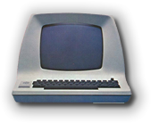
Instead of using the older style of output inherited from the C language, C++ has an object-oriented library organized around the idea of a stream. Instead of using regular functions, like printf(), we'll be using library objects, sending them messages asking them to perform certain operations.Object-oriented programs are organized like a community of objects; each object has various abilities, and each object can interact with the user and with each other somewhat independently.
The C++ standard library actually contains several predefined objects that mimic this old-fashioned glass teletype. The name of the most used of these objects are cout, for the standard output stream, cerr, for the standard error stream, and cin, for the standard input stream.
To use any of these streams, you have to remember to include at least one, and often two headers from the standard library:
#include <iostream> // standard stream objects
#include <iomanip> // standard stream "manipulators"While you don't need to include the manipulators if you don't use them, most of the time you'll want them to control the formatting of numbers.
The Insertion Operator
The metaphore behind stream input and ouput is a stream of data flowing from a source that produces it, and flowing to a destination where is is displayed or saved. If you insert a value into the stream, it eventually ends up at its destination.
The insertion or send-to operator is simply a pair of less-than signs (<<) pointing to an output stream object on the left. On the right of the insertion operator is the value to insert into the stream, sent to the output object. Here are some examples:
cout << "Some text\n"; // display text and newline
cout << 35.14; // display a number
cout << endl; // display a newline
cout << (275 * 7) << endl; // a number and a newline- To print text ("string") data, enclose it in double quotes. You can use one of the \n newline escape character to add a newline to the text (like System.out.println() in Java).
- You can print numbers of any type (including calculations), without enclosing them in quotes. The cout object will convert the binary value to its character or text representation. (cout actually stands for character output because of its ability to convert binary values into their human readable form.
- To print a newline by itself you can use the escape character (as on line 1), or you can use the endl stream manipulator object. Using endl has the additional effect of "flushing" the ouput stream.
- You can use one output statement to insert several values into the output stream; make sure though that each value has its own insertion operator. You don't need to enclose expressions in parentheses, as I've done here, but I feel it makes the intention clearer.
You should have enough information now to add the comments to the starter code and to use the cout object to produce the output shown here. Remember, you won't actually do any calculation at this point, but simply provide dummy values for each of the input and ouput values.
In H00 we entered the input and output values as numeric literals, such as 3.15. You won't be able to do that with this problem. Instead, use string literals, like "5:02" to display the mocked-up input and output values.
Part 2: Input and Variables
Before we can allow the user to enter the starting time
and duration for our program, we have to have some place to
store their answer. Data values in a program are usually
stored in variables, which are:

A named storage area that holds a value
Before you can use a variable in C++, you must declare it. A declaration statement associates a name with a particular type of variable. (The reference link has more information on the syntax and conventions for identifiers or names in C++.)
To actually create the variable, though, you also have to use a definition statement that sets aside memory for the data the variable will hold. In almost all cases, we'll combine both of these into a defining declaration that looks like this:
The syntax elements appearing in gray (that is the modifier(s) and the = initializers parts) are optional. The parts in red (including the semicolon at the end) are required. The name-list is a list of variable names separated by commas.
Here are some example definitions:
double width, height; // no modifier or initializer
unsigned int temp = 95; // unsigned modifier and value initializer
const Color BLACK(0, 0, 0); // const modifier and direct initialization
static vector<int> v{1, 2, 3}; // static modifier, list initializerA definition or declaration tells the compiler:
- what kind of value the storage location should contain (int, Color).
- the name of the storage location, (width, height, temp, BLACK, and vec). Make sure you read the linked reference section for information on the syntax and convention rules for identifier names.
- and, optionally, an initial value (or set of values) to store in the location.
Data Types
When we store values in a variable, we can classify
each value by the kind of thing that it is,
just like you can classify the beverages you can
purchase at 7-11. There, for instance, you can get
hot drinks, like coffee or hot chocolate, and cold
drinks, like soda and Slurpies.
 The computer world works in a similar fashion.
Instead of hot and cold, we can store text or
numbers in a variable. We call the kind
of value the value's data type.
The computer world works in a similar fashion.
Instead of hot and cold, we can store text or
numbers in a variable. We call the kind
of value the value's data type.
So far, you have seen variables of type int and double, but C++ has many different types. We can break these types down into several categories.
- Built-in value types that are part of the C++ programming language. These include numbers like int and float, the values true and false and the character type. These built-in types are also called the fundamental, primitive or atomic types.
- Built-in derived types that are built upon one of the other types. These include pointers, arrays, references and enumerated types.
- Library class types, such as string and vector, which are supplied as part of the Standard C++ library.
- User-defined types that are similar to the library types, but that are designed and implemented by you (or other programmers), but that are not part of C++ itself. These are called classes or structs.
The fundamental types that are defined as part of the C++ language are grouped into four categories—integers, floating-point numbers, Boolean, and character.
For H01 we'll need to use the integer type.
The Integer Types
Integers are whole numbers, including the counting numbers, zero and the negative numbers. 27 is an integer, as is -345. 7.25 is not an integer, because it is not a whole number.
In mathematics, integers are infinite. In contrast, integer primitives—in the computer sense—are finite because each integer number must be stored in a fixed-size region of memory. Just like the different tubs of popcorn at the movie theater, C++ integers come in different sizes: short, int, long, and long long.
Each of these different sizes comes in two "flavors": signed integers, which represent both positive and negative whole numbers (as well as zero), and unsigned integers, which represent only zero and the positive whole numbers.
Explicit numbers like 235 or -75 that appear in your source code are called integer literals. You enter a literal by simply typing a sequence of numbers with no decimals or commas. You may, however, specify a type or a different base when entering your numbers. See the online reference for more information.
Time in a Bottle
You now have enough information to create the four variables we'll need for the input. Place this code in your run() function, after the section that prints the title, but before the section where you prompt and get the input.
// Variables to hold the user's input
int timeHours, timeMinutes;
int durationHours, durationMinutes;Before we go on, let's take a look at what we can do to these (or any) variables.
Changing Values
 A variable is a named "chunk" of memory, but most
of the time, we don't care about the chunk of memory
at all—what we care about is what's inside the
memory. The number stored inside a variable is
called the variable's value. As your program
runs, you can store different numbers inside
the same piece of memory. (That's why we call it a
variable, since its value can vary as the
program runs.)
A variable is a named "chunk" of memory, but most
of the time, we don't care about the chunk of memory
at all—what we care about is what's inside the
memory. The number stored inside a variable is
called the variable's value. As your program
runs, you can store different numbers inside
the same piece of memory. (That's why we call it a
variable, since its value can vary as the
program runs.)
We can place a value in a variable in three different ways:
- Initialization places a particular value in a variable
at the point where the variable is created. In C++, when
you declare a simple variable, the initial value
it contains is undefined. Here's one way to
explicitly initialize a variable:
int answerToEverything = 42; - Assignment puts a new value into an existing
variable. Here is an assignment statement that changes
the (existing) variable sides:
The assignment statement copies the value on its right, and stores the copy in the named memory location (the variable) on its left. Assignments may only appear inside a function.sides = 10; // executable assignment statement - Input reads data from some external source and stores it in the desired variable. That's what we need to do with our program.
There's more to initialization and assignment than what appears here. Read the linked reference material for the details.
Changing Values through Input
In addition to assignment and initialization, variables can also be given their values through input. In C++ w use the cin (see-in) object to read from the standard intput stream.
While the cout object is very similar to the System.out object of Java, the cin object is closer to Java's Scanner class than to System.in. Like Java's Scanner object, cin both reads input and converts that input into a variety of formats. This kind of input is called formatted input.
The extraction or get-from operator (>>) reads a value from the console and converts and stores the result in your variable. Here's an example:
cout << "Enter the limit: "; // "prompt" (space but no newline)
int limit; // variable to hold value
cin >> limit; // read, convert and storeWe, however, want to read a more complex input: an integer representing the hours, the colon (which we'll discard), and the second integer value representing the minutes.
Although this would be fairly difficult in Java, in C++ it turns out to be fairly simple. To understand why, let's look at how numeric input actually works.
Numeric Input
When a user types the number 123 from the keyboard in reponse to the three lines above, what is actually stored in memory are the three binary values
0011-0010
0011-0011
representing the three ASCII char (character) values '1', '2', and '3', stored sequentially in memory. Because the user is entering values intended to be used in a calculation, (and not a street address, for instance), those three char values will have to be combined and converted from text to the binary integer 123, shown here as a 32-bit signed integer:
This process—turning human-readable text, input from the keyboard or a file, into binary numbers, (and its alter-ego, turning binary numbers into human-readable text), is the job of parsing or conversion. The cin object will do this for us.
Numeric Input Example
Let's look at an example that reads a pair of numeric values, reading both numbers on the same line:
cout << "How old are you and what's your GPA? ";
int age;
double gpa;
cin >> age >> gpa;
cout << "Wow. " << age << " years old "
<< " and you can still earn a "
<< gpa << " GPA?" << endl;- The user is prompted to enter their age and gpa. I'm assuming the user will enter a whole number for their age, and a real number for gpa.
- Next, the int variable age is defined.
- On the next line, the double variable gpa is defined. Neither of these variables has a legitimate value.
- Next, the extraction operator reads an integer from the cin object and stores the result in the variable age. Following that, the next extraction operator reads the characters that the user types at the keyboard and automatically converts them from char to double before placing the result in gpa.
- Finally, in the last statement, (spanning lines 5-7), the user's input is concatenated along with the program's output message.
If you run this code fragment you'll see some
output that looks a little like this:
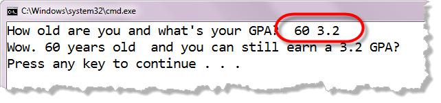
Notice that you can enter the two numbers on the same line, separated by tabs or spaces. You can also press ENTER after each number. Both styles of input will be processed correctly.How Numeric Input Works
Here's a picture that shows the characters I entered when I
ran the program. Notice that the first character is a space,
followed by a six and a zero. That is followed by another
space, a three, a period, a two and the ENTER key or newline:
 When the code: cin >> age is
encountered at runtime, the cin
object starts reading characters, looking for a character that
could be part of an integer (a digit or a sign character).
When the code: cin >> age is
encountered at runtime, the cin
object starts reading characters, looking for a character that
could be part of an integer (a digit or a sign character).
Any whitespace characters (spaces, tabs, newlines) are simply discarded. In my example here, the first space character would be read and then ignored. If any other characters are encountered, an error occurs. (You can read about the errors in the next section.)
When a character that makes up an integer is encountered, (like the 6 in my input), then the cin object method keeps reading and storing characters, until a non-integer character is found. In this case, it will read the 6 and the 0, but because the space following the zero is not part of an integer, it stops reading.
The characters read up to this point are collected together (or "marshalled") into the text sequence "60", which is then converted to an int value, and then stored in the variable age. When the next extraction operator is encountered,
the cin object picks up
exactly where the previous reading ended, processing the
space character following the 0 in 60:
 This was the non-integer character that caused
the previous reading operation to stop.
As before, the extraction operator method skips or discards
leading whitespace characters, looking for a character that
matches the pattern for a valid double
value.
This was the non-integer character that caused
the previous reading operation to stop.
As before, the extraction operator method skips or discards
leading whitespace characters, looking for a character that
matches the pattern for a valid double
value.
When it encounters the 3, it starts assembling the characters into a temporary storage location (called a buffer). The decimal point is legal inside a double, so that is added to the collection; likewise the 2 is legal as part of a double following a decimal point. The newline character that is encountered following that, though, is not a legal double character and so reading stops.
The characters that are assembled so far are converted to a double by the cin object, and then stored in the gpa variable.
The next input method that is called will pick up with the newline
character as its first input.
Input Errors
What happens, if the user types in an unexpected
input value, say 60.5 for age, or perhaps "sixty",
or even just adds an extra comma separating the values?
If we write this in Java or C# or Python, you'll see
something like this:
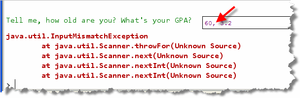
In this case, the input stops on the comma. However, when the second variable is encountered, first character of input is the comma, which does not match the pattern for characters allowed in a double.In Java (and C# and Python), when this error is noticed the system prints an error message on the console, and terminates the program. This is called a runtime error, because it's detected when your program runs, rather than when you compile it. (After all, the compiler has no way of telling what the user will type in when the program runs.)
C++ takes a different tack. Instead of causing a runtime error and stopping your program, the input stream itself is placed in an invalid state, and stops working as expected.
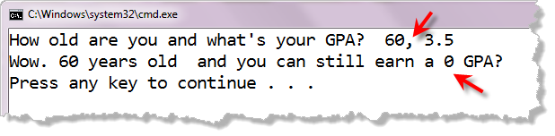
In C++ when the comma is encountered, your program doesn't crash; the cin object simply stops working correctly, as you can see from these pictures.Once you've learned how to write functions and how to use the if statement in the next few chapters, you'll be able to easily write bullet-proof input routines. For right now, though, we'll just assume that the user types in the data as requested.
Time to Get Some Input
You now have almost enough information to prompt and read the input values for each of the the four input variables. Here's what we want the input section to look like:
And here's a good first draft, with only one small problem:
// Prompt and read the input
cout << " Time: ";
cin >> timeHours;
cin >> timeMinutes;
cout << " Duration: ";
cin >> durationHours;
cin >> durationMinutes;The problem? We haven't handled the colon separating the hours from the minutes!. We can fix that in two ways.
Method 1 - Dummy Input
We don't want to keep the colon that appears between the two integer variables, but we still need to read the data to remove it from the stream. We do that by introducing a "throw away" variable just for that purpose.
Because the colon is not a number, but a single character, the type of the variable should be char. This allows you to make your code a little more compact as well.
// Prompt and read the input
char discard; // won't keep this
cout << " Time: ";
cin >> timeHours >> discard >> timeMinutes;
cout << " Duration: ";
cin >> durationHours >> discard >> durationMinutes;Method 2 - Unformatted Character Input
Using the extraction operator is not the only way to use the cin object. The C++ input stream objects also suppor unformatted input using the traditional "method" syntax you should alreay be familiar with. Calling the method (or member function in C++speak) cin.get() simply removes and returns one character from the input stream. Using this technique, we can rewrite our code as:
// Prompt and read the input
cout << " Time: ";
cin >> timeHours;
cin.get(); // discard the colon
cin >> timeMinutes;
cout << " Duration: ";
cin >> durationHours;
cin.get(); // discard next
cin >> durationMinutes;Part 3—Processing Some Time
Our next step is processing—organizing, analyzing, modifying and manipulating the input to produce our desired output. The simplest kind of processing: using arithmetic expressions to perform numerical calculations.
Before you get started, though, remember to do some planning. You know from the problem statement that if the user enters a time of 3:57 and a duration of 1:05, then the sum should be 5:02 and the difference should be 2:52.
Let's take a look at some other expected inputs and outputs. Here's an Excel spreadsheet with some inputs and expected outputs.
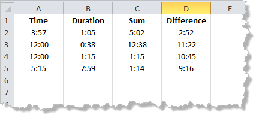
Planning the Processing
Just as we had four variables for our input, we'll need four variables for output. I'll call them: sumHours, sumMinutes, diffHours and diffMinutes
We can use initialization, assignment and simple integer arithmetic to add or subtract the appropriate time and duration values. As we do, it's important to mentally trace the results so you have rough idea whether you've done the calculations correctly. Here's what will happen if we do that. Note that I've marked the cells that don't work in light blue.
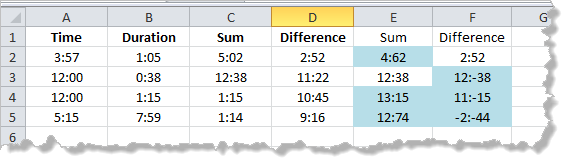
Looking at this, it's obvious that our naive solution yields the wrong answer, at least for the addition in the given set of inputs. And, if the addition is wrong, we can be pretty sure that the subtraction is only accidentally correct, just like a "stopped clock is correct twice a day".
Corrections for Addition
However, if we look at the numbers that are wrong, we can see that the problem occurs when the minutes go over 60 or less than 0. If we can arrange to "carry" and borrow extra hours in those cases, we'll have the right output (at least for these inputs). That leads us to the following processing plan for addition:
- Add time and duration minutes; store in sumMinutes
- Add time and duration hours; store in sumHours
- Add number of hours in sumMinutes to sumHours
- Remove any hours > 12 from sumHours
- Subtract number of hours * 60 from sumMinutes
Here's an Excel spreadsheet showing each of these five steps, So we have a plan for addtion that seems to work.
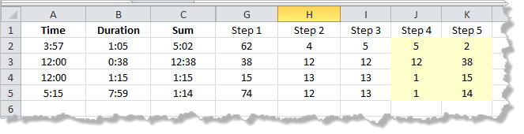
Now let's look at subtraction.Corrections for Subtraction
If we look at the subtraction examples we see something similar, but not identical to addition. In this case, the problems occur when our "underflow" or go negative. Here's a plan to correct that:
- Add 60 to time minutes, subtract duration minutes; store in diffMinutes
- Add 12 to time hours, subtract duration hours; store in diffHours
- Add number of hours in diffMinutes to diffHours
- Remove any minutes >= 60 from diffMinutes
- Remove any over hours from diffHours
Here's an Excel spreadsheet showing each of these five steps, So we have a plan for subtraction that seems to work.
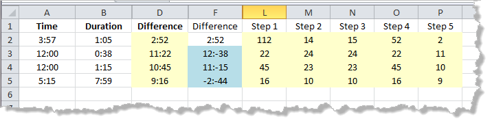
From Psuedocode to C++
To convert our plan to code, we need to:
- Create some variables to hold the output.
- Write some assignment statements along with arithmetic expressions to store the values in the correct variables.
Begin by copying the plan into the processing section, using
single-line comments. Here's what that looks like
when I do it.
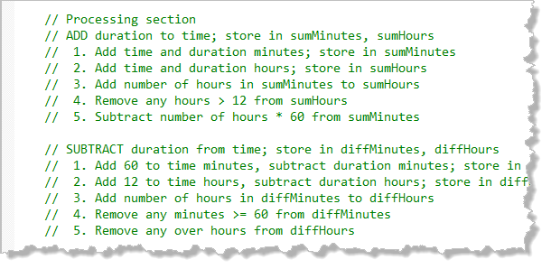
Now I won't have to keep opening the textbook or my notes to figure out what to do. Now, we'll simply go step-by-step through the plan; along the way I'll explain a little more C++ sytnax.Expressions and Calculations
An expression is any combination of operators and operands which, when evaluated, yields a value. Well, that's not very helpful; what is an operand? What is an operator? What is evaluation? What do those words mean? Let's look.
An operand is simply a symbol that indicates a value or storage location in memory. The important thing to remember is that all operands are just different ways of specifying values or data. Operands include:
- Literals : which represent a value
- Variables : a storage location containing a value
- Method invocations : which can produce a value
- Sub-expressions : which compute a value
Here are some examples:

An operator is a symbol that is used to perform a calculation on one or more operands and, subsequently, produce a value. Here are the five most used basic arithmetic operators that can be applied to any numeric type.
| Operator | Meaning |
|---|---|
| + | Addition (or unary plus) |
| - | Subtraction (or unary minus) |
| * | Multiplication |
| / | Division (both integer and floating-point) |
| % | Remainder or modulus (both integer and floating-point) |
Handling Addition
The assignment statement, which you've already met, evaluates the expression on its right, and copies the value produced into the variable on its left. With that information, we can handle the first two lines in our addition plan:
// 1. Add time and duration minutes; store in sumMinutes
int sumMinutes = timeMinutes + durationMinutes;
// 2. Add time and duration hours; store in sumHours
int sumHours = timeHours + durationHours;As you remember from earlier in this chapter, this is not actually assignment, but initialization, since the variables sumMinutes and sumHours have not yet been created.
In general, you should only define a variable when you have a value to store in that variable. The only exception to this is when the variable is initialized with input.
The next three lines are a little more difficult. How do you find out how many "hours" exist in sumMinutes? How do you "remove" the hours greater than 60? For that, you need to learn about integer division and remainders.
Integer Division and Remainders
Integer division works like the division you learned in grade school. You draw a little "house" on the board and put the number you want to divide (called the dividend) inside the house.
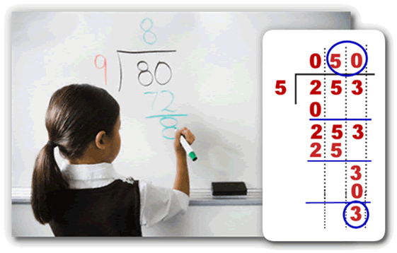
You draw the number you want to divide by (the divisor), standing at the front door of the house like a visitor. You then ask yourself, "how many visitors" could fit inside the house and place that number on the roof. This is the quotient.To perform the division, you multiply the quotient by the divisor, place the result underneath the dividend and subtract. The remainder is anything left over "down in the basement", 8 in the example the student is solving on the board (on the left), and 3 in the example on the callout.
When you perform integer division in C++, the quotient is calculated, but the remainder is discarded. It's important that you understand that when you divide two integers, the result is truncated, not rounded. With normal division, 15/4 would be 3.75 but with integer division, it's just 3, not 4 as it would be if the 3.75 was rounded.
The % or remainder operator (also sometimes called the modulus operator) does exactly the same thing, except, instead of returning the quotient portion from the roof, it returns the remainder from the basement. If you divide 12 by 7, the quotient is 1, since there is one 7 "living in" 12. 12 % 7, howevere, is 5 because that's what's left over after dividing 12 by 7.
Finishing Addition
With this info, we can complete the remaining three lines in our addition plan, like this:
// 3. Add number of hours in sumMinutes to sumHours
sumHours = sumHours + sumMinutes / 60;- The expression sumMinutes / 60 represents the number of hours inside of sumMinutes, since both operands are integers.
- Because of the rules of precedence the addition occurs after the integer division.
- We want to change an existing variable, sumHours, not create a new variable. This is an assignment statement, not an initialization.
- Because we are adding to the variable sumHours
it must appear also on the right-hand side of the
assignment operator. There is a shorthand way
to do this that is more consise:
sumHours += sumMinutes / 60;
// 4. Remove any hours > 12 from sumHours
sumHours = (sumHours - 1) % 12 + 1;- We begin by subtracting 1 from sumHours, turning 12 into 11 and 13 into 12. This expression must appear in parentheses since the subtraction operator has lower precedence than the remainder operator.
- We next use the remainder operator to calculate the number left over after dividing by 12.
- Finally, we add the 1 back to the result.
If sumHours is greater than 12, (13 or 14 say), we want to change it to 1 or 2. If we were to use the expression: sumHours % 12, then 13 would be correctly converted to 1, but 12 would be converted to 0, which isn't what we want.
// 5. Subtract number of hours * 60 from sumMinutes
sumMinutes = sumMinutes % 60;- While the comment is correct, all we're really trying to
do is to change sumMinutes so that the largest
value is 59. As with the previous example, we
can do this in a more concise way using the shorthand
assignment operator:
sumMinutes %= 60; - We could also follow the comment exactly and write the
expression like this:
sumMinutes - sumMinutes - (sumMinutes / 60 * 60);
Handling Subtraction
Finding the difference works almost the same as addition. Following our plan, we come up with the following code:
// SUBTRACT duration from time; store in diffMinutes, diffHours
// 1. Add 60 to time minutes, subtract duration, store in diffMinutes
int diffMinutes = 60 + timeMinutes - durationMinutes;
// 2. Add 12 to time hours, subtract duration hours; store in diffHours
int diffHours = timeHours + 12 - durationHours;- As with addition, we define and initialize both of the variables we'll use for output.
- Both of these additions are there to avoid negative numbers when subtracting. We'll remove them in the subsequent steps.
// 3. Add number of hours in diffMinutes to diffHours
diffHours = diffHours + diffMinutes / 60;
// 4. Remove any minutes >= 60 from diffMinutes
diffMinutes = diffMinutes % 60;- This code is almost exactly what we had to do with addition.
// 5. Remove any over hours from diffHours
diffHours = (diffHours - 1) % 12;- Finally we remove the extra hours.
- We don't need to add an extra 1 at this point, because we did it in Step 1 (unlike with addition.)
Part 4—Output and Output Formatting
We've now finished the input and processing sections, and we're ready to go on to the final output section where we display the results of all of our calculations.
Your initial, "mocked-up" output section likely looks something like this:
cout << endl;
cout << "1:05" << " hours after, and before, "
<< "3:57" << " is [" << "5:02" << ", "
<< "2:52" << "]" << endl;The first line (ending in endl) adds a newline to the output stream, so that we have a blank line separating the input and output sections on the screen.
The next few lines have been copied from our original output mockup at the beginning of the chapter, and placed into a series of cout statements. As I mentioned in Part 1, you want to separate out the parts that will be replaced (such as "1:05" and so on), from the static text that won't change.
Now, all we have to do is replace each of these with an expression that represents our calculated values. Here's a table that shows those replacements:
| Mockup | Replacement |
|---|---|
| "3:57" |
timeHours << ":" << timeMinutes
|
| "1:05" |
durationHours << ":" << durationMinutes
|
| "5:02" |
sumHours << ":" << sumMinutes
|
| "2:52" |
diffHours << ":" << diffMinutes
|
Output Formatting
Go ahead and run the program, entering in the values suggested
in the introduction. You'll notice the output produces the
correct values, but they are formatted
incorrectly; we are missing the 0 when is less than
10. If we tried a few other examples, you'd see
that you are also missing the leading zero, when the hours
is zero.
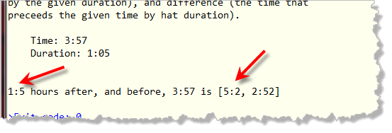
We can fix this by using some of the output manipulators defined inside the <iomanip> standard library header. (Note: if you haven't added this header to the list of #include statements, do it now.
Manipulators are functions that "massage" a stream to control formatting. For instance, endl is a manipulator that inserts a newline into the stream.
Manipulators change the internal properties of the output stream to changes the formatting of subsequent output. The two manipulators that we need to use are setw which changes the column width and setfill which affects how empty values in a column are filled.
Controlling Column Width
To line up your output in columns (as with a table), you need to specified a field width for items to be printed. You do that with the setw manipulator, like this:
cout << setw(2) << num
<< setw(8) << num * 1000 << endl;This statement prints the value of num in a field of width 2 and the value of the expression num * 1000 in a field of width 8.
- The values inside each "field" are right-justified. If num is less than 10, then a space will be printed before the number. If num is greater than 99 then the field width is ignored.
- The setw manipulator is transitory. You have to place it in front of each value you want formatted.
Padding
The setw manipulator uses the space character to fill in the unused room in a field. You can change this by using the setfill manipulator.
- The setfill manipulator requires a char argument, not an integer. To change the fill character to a zero, we use setfill('0').
- The setfill manipulator is persistent, unlike the transitory setw manipulator. You only have to specify it once.
Using these two manipulators, we can change the output statement so that it looks like this:
// Output section
cout << endl;
cout << setfill('0');
cout << durationHours << ":" << setw(2) << durationMinutes
<< " hours after, and before, "
<< timeHours << ":" << setw(2) << timeMinutes
<< " is ["
<< sumHours << ":" << setw(2) << sumMinutes
<< ", "
<< diffHours << ":" << setw(2) << diffMinutes
<< "]" << endl;Run the program again, and you'll see we now get the output we expect. Try a couple other examples from the previous section, and you'll see that they should work as well.
Part 6—Testing Your Code
While everything looks pretty good up to this point, we really can't be sure that our program is bug-free. Testing is the process of using many different (carefully crafted) inputs to see if we can flush a bug out of hiding.
As with the last chapter, I have used Excel to calculate about 25 different inputs along with the expected outputs for each of those input sets. To try your code against my test file, simply find the line at the beginning of the file that currently reads:
bool TESTING = false;Now, change the false to true and build the program again. Here's what happens when I do that.
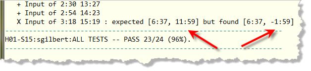
That's the attitude you want to adopt as to gain more success in programming. Every bug that your tests reveal tells you a little bit more about the logic in your program, and brings one more bug out of hiding so that you can squish it.
The Debugging Process
Debugging your code is a process—a series of steps that help you find and fix the errors in your program. The process begins when you determine that your program is producing the wrong output (something you'll normally discover by testing.) The goal of the process is to fix the program, and this is best done in several disciplined steps; it's altogether too easy to fix one problem, and, in the process, introduce another.
To avoid that, you should perform each of the following steps in the debugging process, in order:
- break it,
- isolate it,
- fix it
- and test it again
Break It
 It might seems strange that the first step in fixing your program
is to break it; after all, if your program wasn't already broken to
begin with, you certainly wouldn't be debugging it now.
It might seems strange that the first step in fixing your program
is to break it; after all, if your program wasn't already broken to
begin with, you certainly wouldn't be debugging it now.
Well, that's not what breaking it means. Rather than introducing new errors, breaking it refers to your ability to force your program to fail reliably; that is, repeatedly and at will. If your program bugs appear sporadically and unexpectedly, then you don't really have a very good chance of catching them.
Breaking a program involves reproducing the conditions under which it fails. Ask yourself what numbers you entered, where did you click the mouse, what input was provided, what controls were clicked and in what order. Then, sit down and perform exactly the same actions making sure that you've isolated the circumstances where the error occurs.
Don't try to fix the program until you can break it at will.
Until that occurs, you don't really know what the problem is.
Isolate and Understand
 The next step, to locate, isolate and understand the bug, is the most
difficult of the four, so be patient and be prepared to take your
time. Usually you'll need to look at the clues in your
output to determine exactly what part is failing.
The next step, to locate, isolate and understand the bug, is the most
difficult of the four, so be patient and be prepared to take your
time. Usually you'll need to look at the clues in your
output to determine exactly what part is failing.
Because of the pre-calculated test data and the CS 105 Testing Framework, we can see that the problem occurs with the subtraction part of our code.
Once you've located the bug, before you can fix it you'll have to understand exactly what caused the problem. To understand the bug, you have to have a firm grip on what your program should do. What that means is:
- Before you look at the output, how have to know the expected values. Just looking at the values won't help at all, if you don't know what the values should be.
- When the value is correct, don't be afraid to look elsewhere. Often this requires you to rethink what is causing the problem. If multiple variables are used in a calculation, for instance, make sure you look at all of them, not just the final "output" variable.
- Make sure you double-check your computations, especially if they involve integers and floating point numbers or library methods.
Sometimes understanding the problem simply means putting things aside for a bit and then coming back to the problem later. This gives your subconscious mind a chance to chew on the problem a bit.
Fix and Test
 Once you understand your program well enough to see why
it's not working, you're ready to fix it. Think through the
changes you need to make. Look at the big picture, especially
when you are working with large numbers or performing a
complex calculation. Is the answer you're getting generally
reasonable?
Once you understand your program well enough to see why
it's not working, you're ready to fix it. Think through the
changes you need to make. Look at the big picture, especially
when you are working with large numbers or performing a
complex calculation. Is the answer you're getting generally
reasonable?
Sometimes the change you need to make is simple and involve only a single line of code; other times you may realize that your whole concept was flawed and you'll need to redesign an entire method or even an entire program.
 If you've ever watched television, you've probably seen the
situation-comedy episode where the well-meaning father
decides to fix the roof or the shower instead of calling in an
expensive professional. This plot device has endured for so
many years because it is so true to human nature; all of us
tend to rush in blindly, "fixing" things but leaving the situation
worse than when we began.
If you've ever watched television, you've probably seen the
situation-comedy episode where the well-meaning father
decides to fix the roof or the shower instead of calling in an
expensive professional. This plot device has endured for so
many years because it is so true to human nature; all of us
tend to rush in blindly, "fixing" things but leaving the situation
worse than when we began.
To avoid having to call in the "software plumber" to repair your fixes, it's always a good idea to make a backup of your code before performing radical surgery. For more modest changes, you might want to comment out the original line of code before adding your new changes, in the event that you discover your original code was correct after all.
At this point, 90% of the programmers will pack up their tools and head for home. A good craftsman always performs one more step: testing the repair to see if the new kitchen light actually can be turned on and off.
Testing and debugging are not the same thing. Debugging begins when you learn that your program contains an error. It is the process of isolating the bug and removing it. Testing, on the other hand, is aimed at determining exactly what bugs still remain in your program.
Testing turns into debugging when an error is found and debugging should always transition back to testing to make sure your fixes are good. In the testing-debugging process you will constantly bounce back and forth between these two until you're sufficiently confident that no serious bugs remain.
The Problem with Subtraction
The previous section is good advice, but maybe a little theoretical. Let's put that theory to work, finding our bug. Here's what we know.
- With input of 3:18 15:19 we expect to have a sum of 6:37 and a difference of 11:59.
- Our actual output is find for the sum, but is -1:59 for the difference.
So let's reason a little about what could be happening:
- Since the duration is 15:19 (greater than 12 hours, our effective duration is 3:19.
- When we add 3:19 to 3:18 (the starting time), we correctly get 6:37.
- When we subtract 3:19 from 3:19 we should get one minute before 12:00 or 11:59, but instead we get -1:59.
This kind of test condition is known as a boundary condition and should always be tested.
Locating, Understanding & Fixing the Bug
From the analysis we just did, we can see that the diffMinutes value is correctly calculated, but diffHours is not.
To see why it's not, we want to trace through the code; manually calculating the values for diffHours and see what we get at each step. Given an input of 3:18 15:19 we can step through the code like this:
| int diffMinutes = 60 + timeMinutes - durationMinutes; | 59 |
|---|---|
| int diffHours = timeHours + 12 - durationHours; | 0 |
| diffHours = diffHours + diffMinutes / 60; | 0 |
| diffMinutes = diffMinutes % 60; | 59 |
| diffHours = (diffHours - 1) % 12; | -1 |
As you can see, on the last line, the hours goes to negative. With an if statement we could check to see if diffHours were zero and prevent it from "rolling over". We can fix it just as easily, though, by adding 12 to diffHours before subtracting 1
Correct the code so that the last line reads:
// 5. Remove any over hours from diffHours
diffHours = (12 + diffHours - 1) % 12;Check it again and you'll see you got 24/24 or 100%. Paste the output of your finished assignment (remember your name) into the answer sheet provided on Blackboard, and submit it before the deadline to get credit for this assignment.
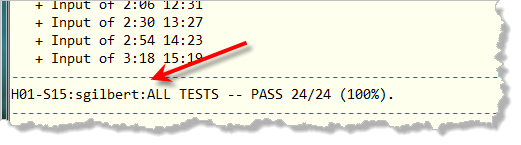
Part 7—Your Turn
For every chapter, you'll complete two homework assignments. The first assignment (H01 for this chapter), I'll walk you through the process, explaining the steps. The second problem, (H02 for this chapter), you'll complete on your own. (I will, however, provide a video-cheat-sheet you can use if you get stuck.)
Download H02.zip from Blackboard, and then complete the following problem—Angry Nerds—using the same techniques you learned in this chapter.
With the hot new mobile game (Android/IOS) Angry Nerds, you not only score points, but can also earn online coupons depending on how well you play the game. You can redeem the coupons on the new video-sharing site Aflicks. (Another one of Ben's great investments.)
For 10 coupons you can download full-length, current feature film. For 3 coupons, you can download a half-hour episode of a "classic" 1960's situation comedy. You prefer current feature films to old television reruns. Write a program that inputs the number of coupons you have won and prints out how many feature films and television sitcoms you can get if you spend all of your coupons on films first and any remaining coupons on sitcoms.
Here is what the program should look like when it runs:
------------------------------------------
Number of coupons to redeem: 18
With 18 coupons you can watch the following.
Films, sitcoms, left-over coupons [1, 2, 2]
You'll find the starter code, the test-cases and the submission form in the download folder. If you get stuck, then you can turn to this video if you get stuck.